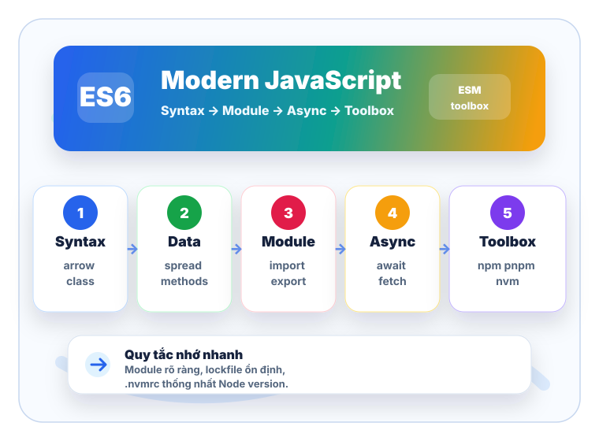

Overview
ES6/ES2015, block scope, template literal và cách đọc code hiện đại.
Buổi training JavaScript
Bài giảng này gom những phần trainee khá cần dùng hằng ngày: cú pháp ES6, module, pattern async, Fetch API, package manager và cách cố định Node version bằng NVM.

Lộ trình
Bài này không đào sâu lịch sử JavaScript. Mục tiêu là đọc được code hiện đại, viết module sạch, gọi API an toàn và setup môi trường Node.js nhất quán.
ES6/ES2015, block scope, template literal và cách đọc code hiện đại.
Arrow function, classes, spread syntax và những điểm dễ dùng sai.
Class dựa trên prototype, named/default export, ESM trong browser và Node.js.
Array/object methods, optional chaining, nullish coalescing, logical assignment, top-level await.
Module pattern, async/await error handling, Fetch API wrapper, ESM vs CommonJS.
NPM/YARN/PNPM, package.json, nơi package được cài và NVM với .nvmrc.
10 câu trắc nghiệm có chấm điểm và giải thích đáp án ngay sau khi chọn.
ES6 Overview
ES6, hay ES2015, đưa vào nhiều tính năng mà các framework hiện đại dùng liên tục:
let/const, arrow function, class, module, destructuring, default parameter,
template literal, Promise và spread syntax.
this.const user = {
id: 7,
profile: { name: "An", role: "admin" }
};
const label = `${user.profile.name} - ${user.profile.role}`;
const role = user.profile?.role ?? "guest";
export function canManage(account) {
return account.permissions?.includes("manage") ?? false;
}
Ưu tiên const, chỉ dùng let khi cần gán lại. Viết function ngắn bằng arrow,
tách module theo trách nhiệm, tránh nhồi mọi thứ vào một file.
ES6 không tự làm code sạch. Code vẫn cần tên biến rõ, boundary rõ, xử lý lỗi đầy đủ và dependency được khóa bằng lockfile.
Arrow Function, Classes, Spread
map, filter, reduce, event handler.this riêng; this lấy từ scope bên ngoài.this.const activeNames = users
.filter((user) => user.active)
.map((user) => user.name);
const team = {
name: "Frontend",
members: ["An", "Binh"],
printLater() {
setTimeout(() => {
console.log(this.name);
}, 100);
}
};
class là cú pháp rõ ràng hơn để tạo object có prototype chung.
Dùng khi domain thật sự có entity, behavior và inheritance hợp lý.
class HttpError extends Error {
constructor(status, message) {
super(message);
this.status = status;
}
}
... mở array/object hoặc truyền danh sách argument.
Rất hữu ích khi tạo bản copy mới thay vì sửa trực tiếp dữ liệu cũ.
const nextUser = {
...user,
profile: {
...user.profile,
role: "admin"
}
};Spread lab
Spread chỉ copy một lớp. Nếu object lồng nhau, cần spread từng lớp hoặc dùng cách clone phù hợp với dữ liệu.
???
OOP in ES6 & Import/Export
JavaScript vẫn là ngôn ngữ prototype-based. class, extends và super
giúp mô tả inheritance dễ đọc hơn, nhưng object vẫn chia sẻ behavior thông qua prototype chain.
Đặt constructor và method chung cho nhiều instance.
Dùng khi subtype thật sự là một biến thể của base type.
Chỉ export phần cần dùng, giấu implementation detail.
Tránh tạo class chỉ để chứa function tĩnh. Với logic thuần, module function thường đơn giản hơn. Với entity có state và behavior đi cùng nhau, class giúp code dễ đọc.
class Cart {
#items = [];
add(product, quantity = 1) {
this.#items.push({ product, quantity });
}
get total() {
return this.#items.reduce(
(sum, item) => sum + item.product.price * item.quantity,
0
);
}
}
ESM giống như mỗi file công khai một vài “cổng ra” bằng export,
rồi file khác nối vào đúng cổng đó bằng import. Vì cú pháp
import thường nằm cố định ở đầu file, browser hoặc bundler có thể đọc trước
project cần những file nào trước khi chạy code.
Live binding nghĩa là import không copy giá trị một lần rồi thôi. Nó giống một đường link tới binding gốc: khi module gốc đổi giá trị export, nơi import đọc lại sẽ thấy giá trị mới.
Code browser thường dùng biến global hoặc IIFE để tự tạo scope.
Khi project lớn, thứ tự nhúng file bằng <script> rất dễ sai,
dependency không hiện rõ và dễ đè tên biến trên window.
<script src="./money.js"></script>
<script src="./cart.js"></script>
// cart.js phụ thuộc vào biến global Money
const total = Money.format(cart.total);
Dependency được khai báo ngay trong file bằng import.
Bundler có thể phân tích graph module, chỉ đóng gói phần được dùng
và browser hỗ trợ module bằng type="module".
import { formatMoney } from "./money.js";
const total = formatMoney(cart.total);// settings.js
export let theme = "light";
export function switchTheme(nextTheme) {
theme = nextTheme;
}
// screen.js
import { theme, switchTheme } from "./settings.js";
console.log(theme); // "light"
switchTheme("dark");
console.log(theme); // "dark" vì theme là live bindingDùng cho nhiều API rõ tên trong cùng module.
import { sum, avg } from "./stats.js";
Dùng khi module có một giá trị chính.
import createStore from "./store.js";
Dùng khi module chỉ cần chạy setup.
import "./setup-analytics.js";
Dùng khi chỉ muốn tải module lúc thật sự cần, ví dụ user mở trang Admin
thì mới tải code của Admin. import() luôn trả về Promise.
// Có await: chờ module tải xong rồi dùng ngay
async function openAdminPage() {
const adminModule = await import("./admin-page.js");
adminModule.renderAdminPage();
}
// Không await: nhận Promise, xử lý bằng .then()
function preloadAdminPage() {
import("./admin-page.js").then((adminModule) => {
adminModule.renderAdminPage();
});
}Modern JavaScript features
Đây là phần nên luyện bằng ví dụ. Chọn từng feature để xem input, output và tình huống nên dùng.
Code
Kết quả
???
includes kiểm tra tồn tại, flat làm phẳng array, flatMap map rồi
flat một cấp.
Object.entries đổi object thành cặp key/value, Object.values lấy value,
Object.fromEntries dựng object từ entries.
user.profile?.address?.city dừng an toàn khi phần bên trái là null hoặc
undefined.
value ?? fallback chỉ dùng fallback khi value là null hoặc
undefined, không nuốt 0, false, "".
Practical Patterns
Module tốt nên giống một “hộp công cụ nhỏ”: tên file nói rõ trách nhiệm, chỉ export những hàm bên ngoài thật sự cần, còn helper nội bộ giữ private trong file. Cách này giúp file khác không phụ thuộc vào chi tiết triển khai.
// money.js - module chuyên xử lý tiền tệ
const currency = "VND";
function normalizeAmount(value) {
return Number(value || 0);
}
export function formatMoney(value) {
return normalizeAmount(value).toLocaleString("vi-VN") + "đ";
}
export function sumPrices(items) {
return items.reduce((total, item) => total + normalizeAmount(item.price), 0);
}
// checkout.js
import { formatMoney, sumPrices } from "./money.js";
const total = sumPrices(cart.items);
console.log(formatMoney(total));formatMoney, sumPrices.normalizeAmount nếu bên ngoài không
cần biết.
Trước đây, code bất đồng bộ thường dùng callback hoặc chuỗi .then().catch().
async/await không làm Promise biến mất; nó chỉ giúp cách viết nhìn giống code tuần tự,
dễ đọc hơn khi có nhiều bước phụ thuộc nhau.
// Cách then/catch: ổn, nhưng dễ dài khi nhiều bước nối tiếp
getUser(userId)
.then((user) => getOrders(user.id))
.then((orders) => renderOrders(orders))
.catch((error) => showError(error));
// Async/await: đọc từ trên xuống dưới
async function loadOrders(userId) {
try {
const user = await getUser(userId);
const orders = await getOrders(user.id);
renderOrders(orders);
} catch (error) {
showError(error);
}
}
Với await, lỗi Promise reject sẽ đi vào catch giống lỗi đồng bộ.
Nhưng vẫn cần xác định boundary: function nào chỉ throw tiếp, function nào log,
function nào hiển thị message cho user.
async function loadProfile(userId) {
try {
const profile = await getUser(userId);
renderProfile(profile);
} catch (error) {
reportError(error);
showToast("Không tải được hồ sơ.");
} finally {
hideLoading();
}
}try/catch/finally rõ ràng.Promise.all.
fetch chỉ reject khi lỗi network hoặc request bị chặn. Với HTTP 404/500,
cần kiểm tra response.ok rồi tự throw lỗi phù hợp.
export async function requestJson(url, options = {}) {
const response = await fetch(url, {
headers: { "Content-Type": "application/json" },
...options
});
if (!response.ok) {
throw new Error(`HTTP ${response.status}`);
}
return response.json();
}Cả hai đều dùng để chia code thành module, nhưng khác ở thời điểm load, cú pháp và mức độ tối ưu cho tooling hiện đại.
import / export
require / module.exports
require() có thể nằm trong if hoặc function.
import/export rõ từ đầu.
Khó bỏ code thừa hơn vì require() có thể được gọi linh hoạt khi chạy.
import("./file.js"), trả về Promise.
require("./file.js") chạy đồng bộ trong CommonJS.
Bundler là công cụ gom nhiều file thành bundle để chạy trên browser, ví dụ Vite, Webpack, Rollup. Tree shaking là bước loại bỏ phần export không được dùng để bundle nhẹ hơn.
Cách nhớ nhanh: code mới nên ưu tiên ESM; CommonJS vẫn cần hiểu vì còn xuất hiện nhiều trong Node.js package và project cũ.
NPM, YARN, PNPM / NVM toolbox
Package manager quản dependency của project. NVM quản Node.js version. Hai phần này nên được cấu hình cùng nhau để giảm lỗi “máy em chạy, máy anh không chạy”.
npm là package manager đi kèm Node.js, dùng để cài package,
chạy scripts và publish package lên npm registry.
npm init -y
npm install axios
npm install -D vite
npm run dev
Cài local sẽ tạo node_modules/ trong project và ghi dependency vào
package.json. Cài global đặt package ở global prefix của máy, thường dùng cho CLI dùng chung.
npm install react
# ./node_modules/react
npm install -g serve
# global prefix/bin/serve
File package.json mô tả metadata, scripts, dependencies,
devDependencies và package manager mà project mong muốn.
{
"name": "training-app",
"type": "module",
"scripts": {
"dev": "vite",
"test": "vitest"
},
"dependencies": {
"react": "^19.0.0"
},
"devDependencies": {
"vite": "^7.0.0"
},
"packageManager": "pnpm@10.0.0"
}So sánh package manager
Cả ba đều cài package từ registry và chạy scripts trong package.json.
Khác biệt chính nằm ở tốc độ, cách quản node_modules, lockfile và mức độ phù hợp với
team/project.
Tốc độ thực tế còn phụ thuộc version, cache, mạng, CI và độ lớn của dependency graph.
node_modules của project.
Tùy version/cấu hình; Yarn classic dùng node_modules, Yarn Berry có thể dùng
Plug'n'Play.
Dùng content-addressable store, rồi link package vào project.
package-lock.json
yarn.lock
pnpm-lock.yaml
node_modules chặt chẽ hơn, có thể lộ lỗi import package chưa khai báo trong
package.json.
Quy tắc thực tế: trong một project chỉ nên dùng một package manager và commit đúng một lockfile tương ứng.
Yarn classic là Yarn v1. Đây là dòng Yarn cũ, rất phổ biến, mặc định vẫn tạo
node_modules giống npm.
Yarn Berry là Yarn v2 trở lên. Nó thay đổi nhiều thứ so với Yarn v1, có thêm Plug'n'Play, plugin và cách cấu hình hiện đại hơn.
Plug'n'Play, hay PnP, là cách Yarn Berry bỏ qua node_modules.
Yarn lưu bản đồ dependency trong file cấu hình và chỉ đúng package nào được khai báo mới được import.
pnpm tải package vào một kho chung trên máy. Project chỉ link tới package trong kho đó, nên nhiều project dùng cùng version sẽ không phải copy package nhiều lần.
Thực hành package manager
NVM
NVM cho phép cài nhiều version Node.js trên cùng máy và chuyển version theo project.
Với team, nên commit .nvmrc để mọi người dùng cùng major/minor Node.js.
Trên macOS/Linux, nvm cung cấp install script qua curl hoặc wget.
Sau khi cài, mở terminal mới hoặc source lại shell profile.
curl -o- https://raw.githubusercontent.com/nvm-sh/nvm/v0.40.3/install.sh | bash
export NVM_DIR="$HOME/.nvm"
[ -s "$NVM_DIR/nvm.sh" ] && \. "$NVM_DIR/nvm.sh"
Dùng nvm install để cài version, nvm use để chuyển version,
nvm alias default để đặt version mặc định.
nvm install --lts
nvm install 22
nvm use 22
nvm alias default 22
node -v
npm -v.nvmrc lab
Quiz
Chọn đáp án cho từng câu. Điểm và giải thích sẽ cập nhật ngay sau mỗi lần chọn.
Tips
Dùng cho callback và function nhỏ. Tránh dùng khi cần dynamic this hoặc constructor.
Dùng cho entity có state + behavior. Với helper thuần, export function thường nhẹ hơn.
Spread chỉ copy shallow. Object lồng nhau cần copy từng lớp liên quan.
Export ít nhưng rõ. Named export phù hợp API nhiều hàm; default export phù hợp một giá trị chính.
Dùng ?? khi 0, false, "" vẫn là giá trị hợp lệ.
Luôn kiểm tra response.ok, parse JSON ở một wrapper chung và xử lý lỗi ở boundary UI.
Commit một lockfile duy nhất: package-lock.json, yarn.lock hoặc
pnpm-lock.yaml.
Commit .nvmrc, chạy nvm use trước khi install dependency.